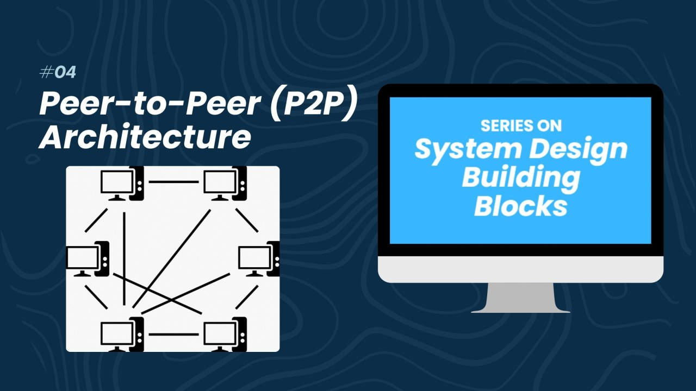

Peer-to-Peer (P2P) Architecture: A Deep Dive with Real-World Use Cases
Ashmita Pandey · · Distributed Systems · Networking

Hi everyone, I'm Ashmita 👋
Today, let’s explore an equally fascinating counterpart to client-server systems: Peer-to-Peer (P2P) architecture. Whether it’s file sharing, messaging apps, or blockchain, P2P technology powers many of the systems we use every day.
In this article, I’ll explain what P2P architecture is, how it works, its key features, advantages, challenges, and real-world applications.
What Is Peer-To-Peer Architecture?
Peer-to-peer (P2P) is a decentralized network model where all participating nodes, called "peers," communicate and share resources directly with each other. Each peer acts as both a client and a server.
Analogy: Imagine a study group where students share notes and help each other understand topics without a teacher. No single person controls the flow of information. That’s how P2P networks operate.
Example: In file sharing, instead of downloading from one central server, your device can download parts of a file from multiple other users who already have it.
Key Features of P2P Networks
- Decentralization: No central authority. Every peer has equal status.
- Self-Organizing System: The network adjusts automatically as peers join or leave.
- Resource Sharing: Peers contribute bandwidth, storage, or processing power.
- Direct Communication: Peers interact without middlemen, reducing latency.
- Scalability: More peers increase network power and capacity.
- Fault Tolerance: No single point of failure. If one peer fails, others fill in.
- Privacy & Security: Data can be encrypted; no central entity storing everything.
Advantages of P2P Networks
- Resilience: With no central server, the network continues even if some peers fail.
- Scalability: Easily handles growth as more users join.
- Efficient Resource Usage: Distributes the load across multiple devices.
- Cost-Effective: Less infrastructure needed.
- Direct & Fast Communication: Enables real-time messaging and data transfer.
- Enhanced Privacy: Less vulnerable to centralized attacks.
Disadvantages of P2P Networks
- No Central Control: Difficult to manage policies and data integrity.
- Complex Management: Requires coordination among equal peers.
- Dependency on Peer Availability: Data access depends on active peers.
- Variable Performance: Network speed may fluctuate based on peer quality.
- Security Risks: Open participation can lead to exposure to malicious users.
- Legal Concerns: Can be misused for unauthorized content sharing.
Real-World Applications of P2P
- File Sharing: BitTorrent allows users to download files in chunks from many peers.
- Messaging Apps: Skype and WhatsApp enable direct calling and chats.
- Cryptocurrency: Bitcoin runs on a P2P network of nodes validating transactions.
- Content Delivery: Peer-assisted CDNs share content more efficiently.
- Collaborative Computing: Projects like SETI@home use peer resources for computation.
- VPNs: Some VPNs use P2P links for encrypted and direct communication.
The Future of P2P
P2P networks are evolving alongside AI, machine learning, and IoT. They’re powering:
- Decentralized AI training
- Device-to-device communication in smart homes
- Secure identity systems without a central authority
Conclusion
Peer-to-peer architecture offers a powerful alternative to traditional systems by distributing control, boosting efficiency, and enhancing resilience. As we build smarter, decentralized systems, P2P will continue playing a pivotal role in shaping the digital world.
Let’s keep learning and exploring and if you’ve used or built something with P2P, I’d love to hear your thoughts!